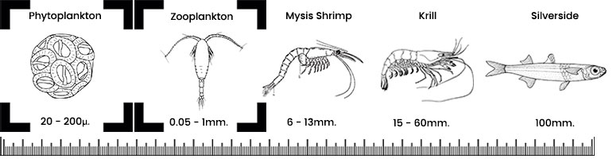

LOCATION
LOCATION
Indo-Pacific - Acropora are found in the islands of the Indo-Pacific including Fiji, Tonga, Solomon Islands, and the Great Barrier Reef.
LIGHTING
High lighting would serve this species well. Acropora can be kept under high output fluorescent bulbs (T5), but may benefit from more intense lighting such as metal halide (MH). It will likely change its coloration depending on the lighting provided.
- Low Light: 30-50 PAR
- Medium Light: 50-150 PAR
- High Light: Over 150 PAR
WATER FLOW
Strong variable water movement is recommended. Acropora are one of the most flow-loving corals. Audit the flow of your tank regularly as Acropora colonies grow and shape water patterns.
FEEDING
Acropora benefit from direct feeding. Use meaty rotifer-based foods and HUFA-enriched options. Defrost frozen foods and apply them with a turkey baster to target colonies.

PROPAGATION
This genus is widely propagated and suitable for aquaculture. A sustainable harvest can be achieved with proper care and tank conditions.
A WORD OF CAUTION
Despite being common and adaptive, Acropora are not beginner corals. They are highly sensitive to rapid tissue necrosis (RTN), infections, and unstable water parameters.
ACCLIMATION
Acropora require careful acclimation due to stress from shipping. Always allow a slow transition to your tank conditions to avoid shock.